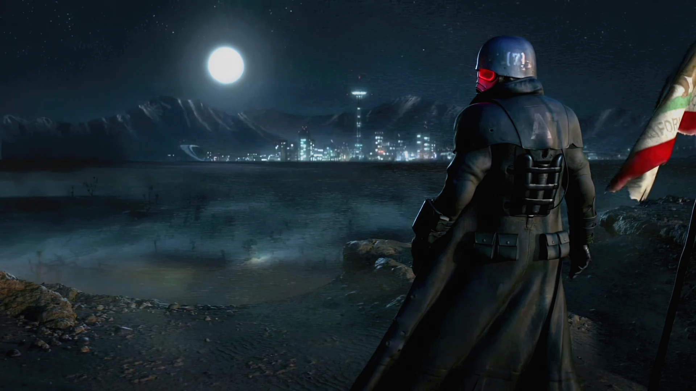
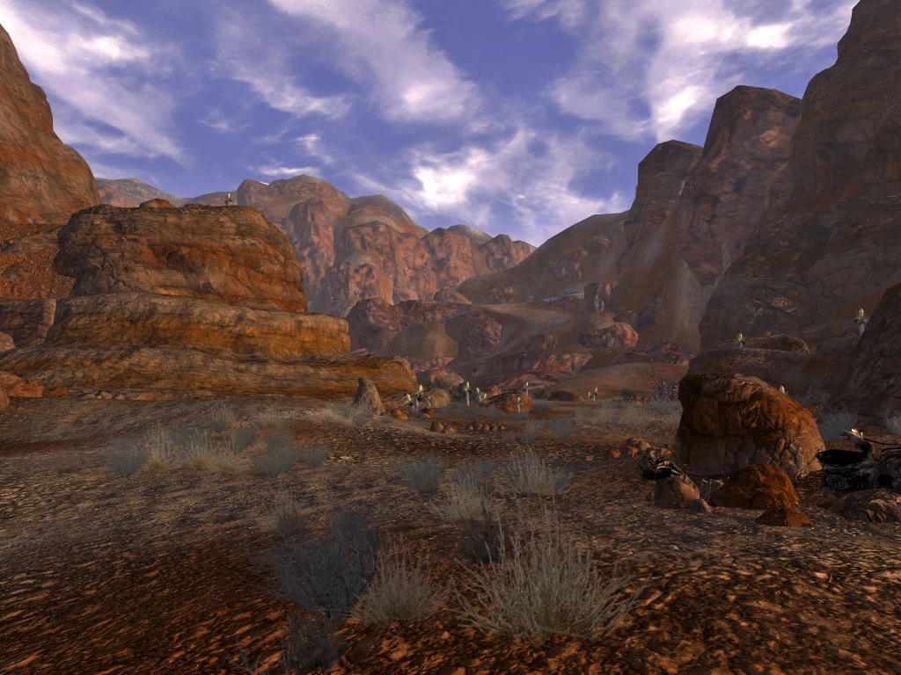

モハビ・ウェイストランド (Mojave Wasteland)
Mojave Wasteland
LOCATION DATA

ニューベガスを見下ろすNCRベテランレンジャー
ネバダ州
アリゾナ州の一部
キンバル大統領
シーザー
リニウス軍団長
運び屋 (プレイヤー)
シーザー・リージョン
ニューベガス経済特区
Fallout TVシリーズ
Fallout: The Roleplaying Game
「雄牛（リージョン）と熊（NCR）がダムの上で互いの喉笛に喰らいついている…
だが、ベガスから放たれるあの光（Mr.ハウス）は？ボールはルーレットの上で回り、テーブルには2人以上の客が座って、賭け金を置いている。
全員が異なる形で負ける。死体のダム、死体の町が砂の上に散らばる。だが、誰の死体がどれだけの割合なのか？ディーラーでさえ知らない。
天気予報：血の雨が砂漠を氾濫させるが、浄化はしないだろう。」
モハビ・ウェイストランド（Mojave Wasteland）は、世界規模の大戦前のモハビ砂漠をベースとした広大な地域であり、戦前のカリフォルニア州、ネバダ州、アリゾナ州の大部分にまたがっています。
ここは『Fallout: New Vegas』のメインとなる舞台およびゲームワールドであり、Fallout TVシリーズ（シーズン2）の主要な舞台でもあります。また、TRPG版『Fallout: The Roleplaying Game』のソースブック『Royal Flush』の主舞台でもあります。
背景
大戦前
大戦前から、モハビ砂漠はアメリカ南西部の過酷で乾燥した遠隔地であり、水を手に入れられる場所でのみ人々の居住が制限されていました。
ネバダ州ラスベガス市はモハビでも数少ない主要都市の一つであり、ギャンブルとカジノの文化で傑出していました。また、当時のアメリカで最も影響力のある企業の一つ「ロブコ・インダストリーズ（RobCo Industries）」の創設者兼CEOであり、国で最も影響力のある男の一人でもあったロバート・ハウス（Mr.ハウス）の故郷でもありました。
Vault-Tecコーポレーションもまたモハビを多くのVaultの主要な建設地に選んでおり、ラスベガス周辺だけでもVault 3, 11, 19, 21, 24, 34と、実に6つものVaultが建設されていました。
モハビはその人里離れた立地から、米軍の施設や政府施設の絶好の隠れ場所となっていました。
ラスベガス近郊のネリス空軍基地やネバダ州のホーソーン陸軍貯蔵庫のような標準的な軍事基地もあれば、一部の施設はより秘密主義的な目的を隠していました。例えば、VIPのための巨大な地下サバイバルバンカーを隠蔽した元試験場である「ヒドゥンバレー」や、政府の秘密機関が貴重な歴史的遺物やエイリアンの証拠を保管するために使用していた「エリア51」などです。これらを超え、砂漠は核実験や残った放射性廃棄物の投棄場所としても使われていました。
大戦後
かつてのアメリカの他の地域と比較して、モハビは「大戦（Great War）」を比較的無傷で生き延びました。
それは主にロバート・ハウスの尽力によるものでした。彼は大戦が起きる12年前に核戦争の勃発が避けられないことを予測し、ラスベガスを救うための準備を進めていたのです。
核の黙示録が始まった時、77発の原子爆弾がラスベガスとその周辺に向けて発射されましたが、ハウスが設置した複雑な防衛システムにより、59発が飛行中に強制的に解除コードを送られて無力化され、さらに9発がラッキー38・ホテル＆カジノの屋上に設置されたレーザー防衛システムによって空中で撃ち落とされました。残る9発は周囲の砂漠に着弾しましたが、都市自体に直撃したものはありませんでした。
戦直後の数年間、モハビは西の新カリフォルニア共和国（NCR）や東のシーザー・リージョンのような発展しつつある文明からはほぼ無視されていたため、レイダー、奴隷商人、スーパーミュータントなどが繁栄する結果となりました。数年間にわたり、ラスベガスはその中心に位置しながらも、ほぼ2世紀の放置によって腐敗し、Vault居住者の子孫からなる様々な部族らが揉め合う単なる縄張りに過ぎませんでした。
時間の経過とともに広いモハビ全体に小さく孤立したコミュニティがいくつも誕生しましたが、「水」は依然として砂漠での人類再定住における最大の制限要因でした。
自らを保存して大戦を生き延びたMr.ハウスは、最初こそ昏睡状態に陥っていましたが、2138年に蘇生しました。彼はラスベガスの状況を把握していましたが、自らの願いに従って社会を再建する時が来るまで待機することを選びました。
一方、2161年までには、ネバダのバッドランドのサバイバリストのコミュニティから「デザート・レンジャー」と呼ばれる自警団組織が結成され、少なくとも名目上はモハビに存在していました。
23世紀に入ってもモハビの派閥力学は変化し続けました。その後、西海岸の巨大勢力と東の軍団が本格的にモハビへと進出を始めることとなります。
NCR/リージョンの対立とニューベガスの誕生
2250年代以降、西部のNCRは領土の拡大と併合を目指して「モハビ・キャンペーン（Mojave Campaign）」を開始しました。
NCRの当初の焦点はラスベガス地域ではなく、さらに東のブルヘッド・シティ周辺にあり、複数のNCR市民を殺害したレイダーへの報復が行われました。「モハビの平定（The Pacification of the Mojave）」と呼ばれたこのレイダーや部族の根絶作戦は2270年にようやく終結し、これによってアーロン・キンバル将軍は国民的英雄となりました。NCRがベガスへと狙いを定めたのはその後のことでした。
ほぼ同じ数十年の間に、「シーザー・リージョン」は東方で権力を確立し、着実にモハビへと進軍していました。デザート・レンジャーは彼らを止めるためにネバダとアリゾナで戦いましたが、負け戦であると悟り、より良い対抗手段として2271年にNCRレンジャーと「レンジャー統合条約」を結んで吸収合併されることを選びました。これによりNCRは、モハビ南部とフーバーダム、そしてニューベガスをリージョンから保護するという責任も負うことになりました。
2274年、アーロン・キンバル大統領（将軍から大統領に就任）はNCR軍をモハビ全体に派遣し、無人であった「フーバーダム」を占拠・修復する作戦を開始しました。
フーバーダムへのNCR先遣隊の到着を探知したMr.ハウスは、これが「組織化された文明の到来」であることを悟り、ラスベガスを復興するための行動を起こします。自らのセキュリトロン軍団を使い、ハウスはラスベガス・ストリップ（現ニューベガス・ストリップ）を占拠していた部族のほとんどを強制排除し、協力的な3つの部族だけを残しました。彼らが後に「スリーファミリーズ」と呼ばれるようになり、ハウスによるストリップの再建と「ニューベガス経済特区」という都市国家の誕生に協力したのです。
その後、排除・見捨てられたスラム街「フリーサイド」は、アポカリプスの使徒と新進気鋭の地元ギャング「キングス」の努力によって、独自の秩序を確立していきました。
NCRがフーバーダムに本格的に到着した時、ハウスのセキュリトロン軍団はすでにそこで彼らを待ち構えていました。
軍事的衝突による被害を恐れたNCRはハウスとの交渉を余儀なくされ、「ニューベガス条約（Treaty of New Vegas）」が結ばれました。この条約により、NCRはフーバーダムの発電出力の95％を自国へ送る権利と、ダムやマッカラン空港に軍事基地を建設する権利を得ました。引き換えに、ハウスはニューベガス・ストリップの不可侵の主権とダムの残り5%の電力を得て、政府への税金等の干渉なしにNCR市民（旅行客）からの観光収入を独占できるようになったのです。
その直後、東方から86の部族を征服した連合軍「シーザー・リージョン」が、新たな首都となる都市を求めてモハビに到着しました。
リージョンはダムとそこに駐留するNCR軍に攻撃を仕掛け（第一次フーバーダムの戦い）、激戦の末に敗退して東へ押し戻されました。この勝利の大部分は、ボルダーシティへの戦術的撤退を指示し、町ごと爆破してリージョンの兵士たちを罠にかけたハロンNCRチーフの功績でした。これにより、敗北の責任を問われたリージョンのマルパイス・レガテ（ジョシュア・グレアム）は処刑の憂き目に遭いました。
この戦いの結果、モハビにおける「NCR」「リージョン」「ハウス」の3勢力の微妙なパワーバランスが固まりました。
1つの勢力が他方を攻撃すれば、第3の勢力がその隙を突いて有利になるという膠着状態です。リージョンは敗北したものの、ニューベガスを新たな首都にするというシーザーの目標は変わらず、その後4年間を部隊の再編成と勢力の補充に費やすことになります。
第二次フーバーダムの戦い
2281年までに、リージョンは再びコロラド川を越えて進撃を開始し、NCRを東側の領土から完全に押し出しているように見えました。度重なる敗北によってNCRのモハビ東部における立場はさらに不安定になり、2281年の10月までにこれらの緊張は一気に急加速して「第二次フーバーダムの戦い」へと向かっていきました。
Mr.ハウスはこの状況を利用して自らがモハビ全体を支配しようと画策し、さらに、もう一人の男「ベニー」はハウスの計画を乗っ取ることでこれら全ての主要勢力（NCR、リージョン、ハウス）を排除しようと企んでいました。（※『Fallout: New Vegas』本編のストーリー）
アナーキー（無政府）状態への回帰：TVドラマ版の時代
運び屋（Courier）が介入した第二次フーバーダムの戦いの正確な結果（どの派閥が勝利したカノンなのか）は不明ですが、長期的には、3つの主要プレイヤー（NCR、リージョン、ハウス）のどれもがモハビにおける権力を完全に掌握・統合することはできず、それぞれが様々な程度の後退や打撃を蒙りました。そして最終的に、モハビは事実上の無政府状態（アナーキー）へと回帰してしまいました。
■ 新カリフォルニア共和国 (NCR) の瓦解
「シェイディ・サンズの崩壊」とその後の数年間で、NCRのモハビにおける存在感はほぼ完全に消滅しました。かつての巨大なキャンプ・ゴルフなどの基地や物資は完全に放棄された状態で放置されています。2296年時点での唯一知られている残留部隊は、プリムを見下ろす丘に取り残された、ロドリゲス大尉率いる未だに援軍が来ると信じている3人組の分隊だけでした。
■ ベガスの中枢の崩壊
ニューベガス自体も完全に崩壊したように見えます。かつてニューベガス経済特区の心臓部であった「ストリップ地区」は、野放しになったデスクローの群れによって占拠され、居住者は誰もいない廃墟と化していました。Mr.ハウスすらも表舞台から姿を消し、ラッキー38は放棄されていました。
■ シーザー・リージョンの内戦
リージョンは地域で強力な存在感を維持してはいましたが、絶対的指導者であったシーザーの死後、「リージョン内戦」と呼ばれる深刻な後継者危機により麻痺状態に陥っていました。複数の男たちが自分こそが後継者であると主張し、拮抗状態のまま互いに殺し合っています。彼らは未だにNCRやBOS、旧盟友のグレートカーンズ等と「戦争中」であると主張していますが、主に自分たちの内部闘争に集中せざるを得ない状況です。
■ その他の勢力
グレート・カーンズは規模を拡大させていたようで、ノバックの町を占拠し、さらにはNCRが崩壊したニュー・カリフォルニア側のロサンゼルス地域にまで進出していました。
フリーサイドはこの地域で独立したコミュニティとしてある程度繁栄を続けていたようですが、かつてルールを定めていた「キングス」の状況は不明です。ただ一つ分かっているのは、かつてのキングスのメンバーの何人かがフェラル・グールと化し、ストリップへ向かう廃棄ゲートの外れを彷徨っていることだけです。
■ TVドラマ シーズン2における展開
2296年、Vault 33の元監督官ハンク・マクレーンは、ラスベガスの地下に秘密裏に建設されていた「Vault-Tec管理用Vault」へと逃亡しました。彼はブレイン・マシン・インターフェース・チップの技術を用いて、モハビに存在する競合派閥の人間（リージョンの兵士や残存NCRレンジャーなど）を次々と誘拐・洗脳し、Vault-Tecの忠実な部下（オフィスワーカー）に変えることで、この地域のすべての派閥間対立を終わらせようと目論んでいました。
娘のルーシー・マクレーンと賞金稼ぎのグール（クーパー・ハワード）は彼を追ってニューベガスに向かい、モハビの各派閥の惨状を目の当たりにします。
同時期に、西海岸派閥の主導権を取り戻そうとしたBOSのサンフェルナンド支部がコールドフュージョン（常温核融合）を奪うためにエリア51を占拠し、結果的に4つのBOS支部を巻き込んだ身内同士での内戦が勃発しました。コールドフュージョンを盗み出した元BOSの騎士マキシマスは、ハンクの元へと向かい、ストリップ地区を占拠していたデスクローを倒すために偶然「NCRレンジャーのパワーアーマー」を着用したことで、見通しを持たないフリーサイドの人々から「NCRの帰還」を告げる希望の象徴として祀り上げられてしまいます。
一方、ラッキー38に単身乗り込んだグールは、コールドフュージョンの力を使って生前のロバート・ハウスの意識を忠実に再現したAIを再起動させることに成功しました。崩壊したモハビで、これらの出来事がどのような結果をもたらすかは今後の歴史が証明することになります。
レイアウト
モハビ・ウェイストランドは、住人や風景の点で多様性に富んでいます。
- 北西部: 松の木々と雪に覆われた山々に位置し、スーパーミュータントやナイトキンに友好的な入植地「ジェイコブズタウン」が谷を見下ろしています。西側には赤い岩肌が鮮やかな「レッドロック・キャニオン」があり、グレート・カーンズが定住しています。
- 西部/南西部: グッドスプリングスやプリムといった独立した定住地が、モハビ前哨基地から侵攻してくるNCRと、元NCRの刑務所を占拠した脱獄囚「パウダーギャング」の板挟みになっています。
- 東部 (コロラド川沿い): シーザー・リージョンの軍勢が、本拠地である「ザ・フォート」や、新たに占領した「ネルソン」、破壊された「ニプトン」、そして放射能で汚染させるよう工作された元NCR拠点「キャンプ・サーチライト」など、あらゆる接点から西へ向かって進出しようとしています。
- 中央部: 高くそびえる山頂とそれに伴う谷が特徴で、その一つの「ヒドゥンバレー」にはBOS（モハビ支部）の残党が隠れ住んでいます。また、狂ったナイトキンたちが「ブラックマウンテン」の頂上に居座っています。ノバックなどの独立系集落は放射能汚染された化け物たちへの対応に苦慮しており、ガンランナーやクリムゾンキャラバンのような企業が拡大する混乱の中で商業を維持しようとしています。

そしてすべての中央、砂漠の輝く宝石である「ニューベガス・ストリップ」のカジノのネオンが夜空を照らし、一攫千金を夢見る人々を引き寄せて通常営業を続けています。しかし、その美しい都市の秘密主義の庇護者であるMr.ハウスもまた、壁を破ろうとする全ての外部勢力に対する力として、静かに自らを武装しているのです。
動植物
ハロン・チーフによると、人口爆発で東へと拡大を余儀なくされたカリフォルニア州に比べ、かつてのネバダ州であったモハビの方が、水や植物が多く肥沃であるとされています。
モハビ・ウェイストランドでは、現在でも数多くの固有種や野生種が繁殖を続けています。瓦礫をあさるカラスや、ミード湖周辺の魚類、そしてほとんど変異せずに生き残っているコヨーテなどの姿を見ることができます。
一方で、やはりウェイストランドらしく、ビッグホーナー、バラモン、ラッドスコルピオン、さらには戦前のBig MT（ビッグエンプティ）での科学実験によって生み出されたナイトストーカーやカサドレスといった凶悪なミュータント生物も多数生息しています。
開発秘話
「モハビ・ウェイストランドのマップは、米国地質調査所 (USGS) の地形データを1/25スケールに縮小してそのまま作成しました。唯一の例外は、縮小したままだとコロラド川をジャンプで飛び越えられてしまったので、川幅とミード湖を少し広げた点くらいです。」
「見えない壁（透明な壁）の多さについてよく不満が出ますが、これは私たちの設計ミスでした。山頂などから見下ろした時の地形の高低差のレンダリングがあまりに酷かったため、そこへ行けなくするために見えない壁を置いてしまったのです。今思えば、景観が悪くても見えない壁は廃止しておくべきでした。」
「プレイヤーがFallout 3とマップを比較して『モハビはプレイアブルエリアが狭いしマップの左側に大きな空白がある』と結論づけるのには困惑しました。現実の地形データ通りにスプリング・マウンテン山脈をなぞったため歪な境界線になっているのですが、それに合わせて四角いマップUIの端までを作れなかったことが原因です。この反省を生かしてDLC『Honest Hearts』ではきちんと境界線や崖を明確にしました」
本作の顔とも言える「広大なモハビ」。Fallout 3のキャピタル・ウェイストランドにおける「緑のフィルター」に対して、モハビの「オレンジのフィルター」が作り出すノスタルジックな風景は世界中のファンを魅了しました。
このページで特筆すべきは、これまで完全には語られてこなかった【アナーキー状態への回帰：TVドラマ版の時代】のロアについて詳細に記述されていることです。
運び屋の大活躍から15年が経過した西暦2296年、NCRもリージョンもハウスも大打撃を受けて衰退し、ストリップ地区はデスクローに支配された廃墟となり、Vault 33のハンク（マクベイン）が地下から各派閥を洗脳して牛耳ろうとしているという「シーズン2の衝撃の舞台設定」がここに明確に言語化されています。
あの懐かしいモハビが完全に崩壊した状態で描かれることは少し寂しくもありますが、運び屋の行動がいかに巨大な嵐の中の凪に過ぎなかったかを痛感させられる、素晴らしいロア・アップデートと言えるでしょう。「彼ら全員が互いの喉笛を噛み切り、死体のダムを作ったが浄化はされなかった」というフォーキャスターの予言は当たっていたのです。
Category:Fallout: New Vegas locations
Category:Fallout TV series locations
Category:Regions
Category:Deserts